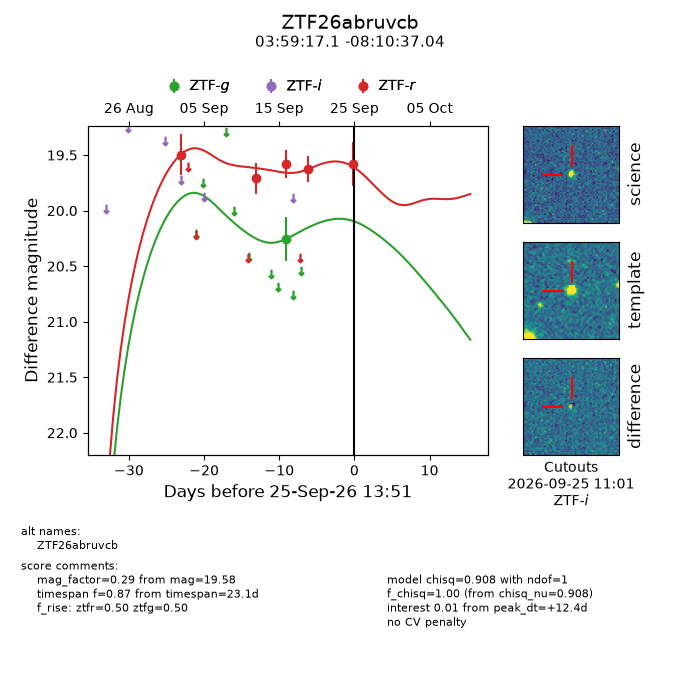
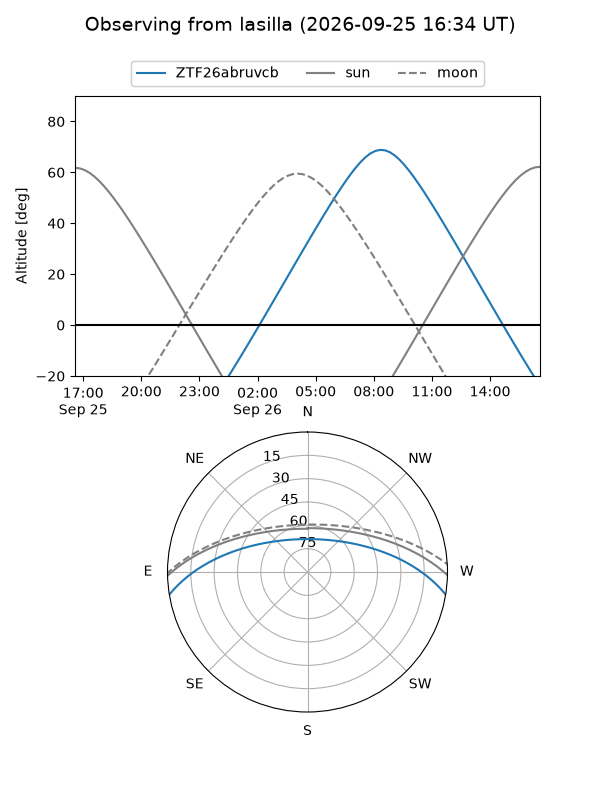
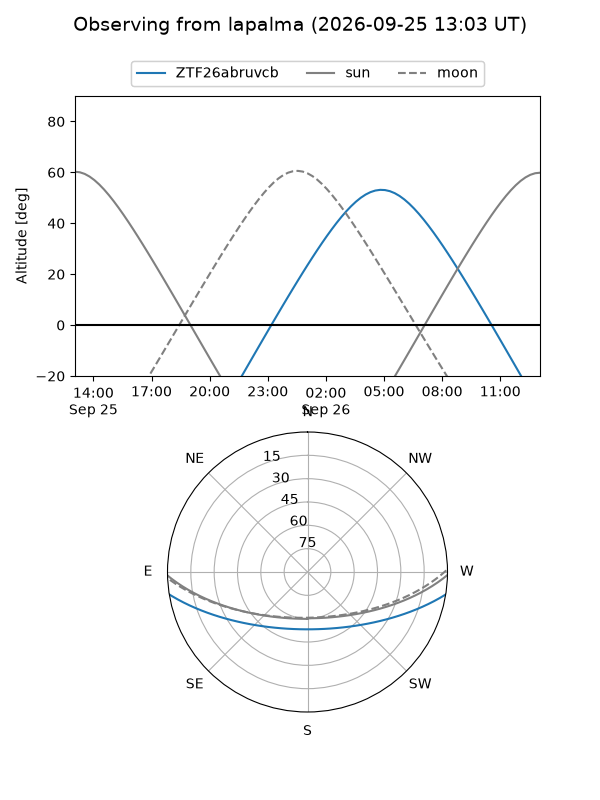
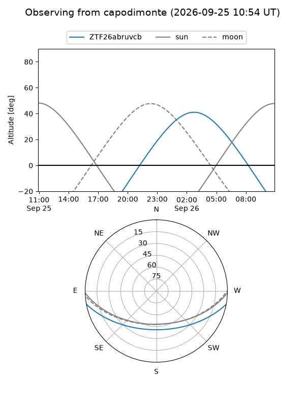
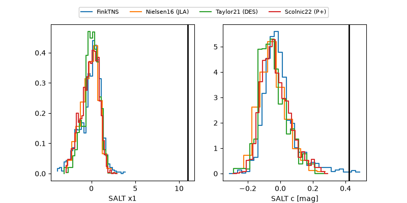

ZTF26abruvcb
Target ZTF26abruvcb at 2026-09-25 13:53
Aliases and brokers:
FINK-ZTF: ztf.fink-portal.org/ZTF26abruvcb
Lasair-ZTF: lasair-ztf.lsst.ac.uk/objects/ZTF26abruvcb
ALeRCE-ZTF: alerce.online/object/ZTF26abruvcb
Direct TNS query: direct search
alt names
ZTF26abruvcb (ztf,fink_ztf)
Coordinates:
equatorial (ra, dec) = 59.8214,-8.17695
equatorial (HMS+DMS) = 03:59:17.13,-08:10:37.04
galactic (l, b) = (198.8519,-41.76544)
Flags:
peak dt: +12.4
Photometry:
last ztfg=20.26, ztfr=19.58
1 ztfg, 5 ztfr detections
Lightcurve

Visibility



Additional plots
